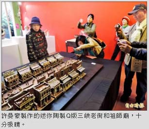

老街百年 店家「藝」起慶祝
翁聿煌｜自由時報／大台北都會生活｜2016年3月13日
今年三峽的梅樹月剛好遇到三峽老街一百週年，許多店家配合梅樹月，將部分店面空間展示藝文作品，提升店面的藝文品味，又可以傳承大師的文化氣息，讓歷史建物和百年文化相得益彰。
位於老街上的「福久米糧」，這次配合梅樹月活動期間，提供三進式街屋全部空間陳設展品，現場掛著李梅樹早年用父親經營米糧行的米袋當作畫布，所繪的風景作品的複製版，作品中浮現米袋編織的粗線，早年藝術家必須克服經濟條件創作的克難精神令人感佩。現場還放置藝術家許晏豪製作的迷你陶製的Ｑ版三峽老街和祖師廟，精緻度令參觀者嘖嘖稱奇。
主辦單位在整條老街及巷弄間布置十二個展點，民眾走進老街，融入三峽老街和藝文氛圍的和諧感。